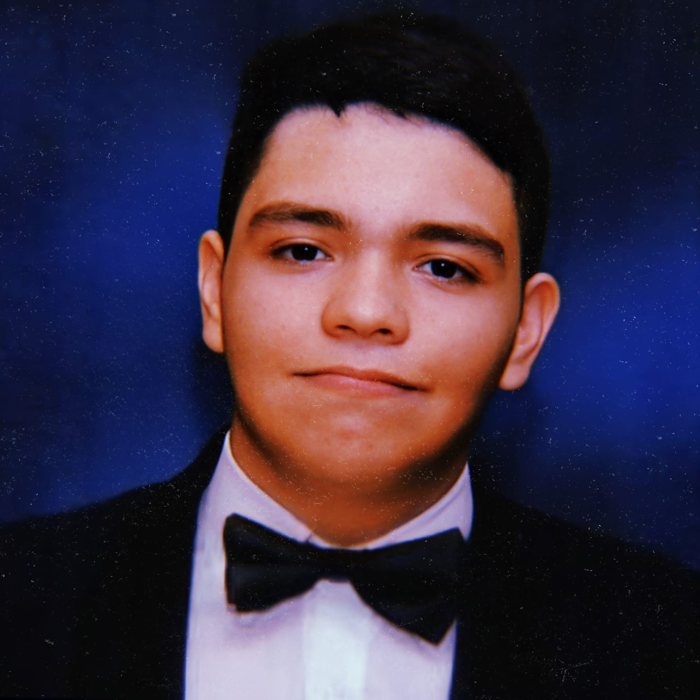

Roberto M. Rocha(Torrober) E-mail: robemario124@gmail.com Semester: 9th Phone Number: +57 304-546-5879 "Be curious. Read widely. Try new things. What people call intelligence just boils down to curiosity." |
 |
I'm a Computer Science student, born and raised in Barranquilla, passionate about computers and their relation to multimedia.
My goal is to pursue a career in computer science with an emphasis on making media creation or generation tools with computers.
Various of my key strengths are: creativity, problem-solving, and self-learning capabilities, the last one being crucial for acquiring any skill.
I enjoy hobbies such as making and producing music, and consuming all types of media.